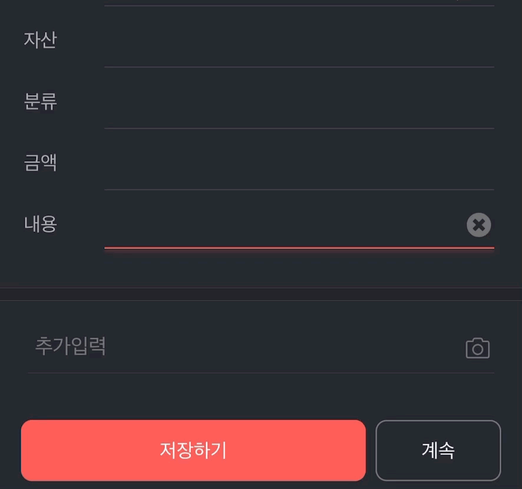
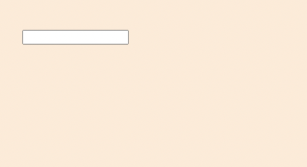
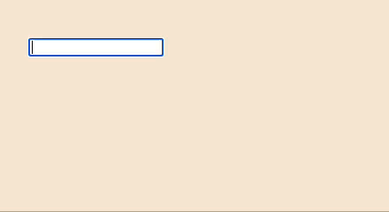

입력 상자에 입력된 어절을 기반으로, 이전에 입력한 키워드를 자동으로 완성하는 방법을 알아봅니다. 자료구조 Trie을 통해 구현할 수 있죠.
제가 정말 잘 샀다 싶은 앱들이 몇 있는데요, 편한가계부 는 그 중 하나입니다. (iOS에서는) 문자를 기반으로 사용자의 결제 내역을 자동으로 저장해주고, 일정 기간별로 통계를 보여주어 지난 한 기간에서의 지출 내용을 통한 미래 지출 계획 설계, 자가 분석 (+ 반성) 등을 도와주는 앱입니다.
그리고 각 결제 내역을 입력할 때 세부 내용을 입력할 수 있는데, 단어 조각을 입력하면 사용자가 과거에 입력했던 기록을 기반으로 입력할 내용을 찾아줍니다.

이렇게요.
특히 내가 입력했던 내용 을 찾아 보여주기 때문에, 구구절절하게 기입했던 내용 역시 잘 기억해놨다가 알아서 입력해줍니다. 저는 내용을 자세하게 적는 편인데, 예를 들어 서브웨이 터키 6인치 위트 피클류 제외 음료 없이 이라고 적거든요. 그리고 서브웨이에 가면 보통 먹었던 메뉴를 먹고요. 그 때마다 저 20음절의 어구를 직접 입력하는 것이 아니라, 서브라는 2음절만 완성해도 해당 내용을 알아서 찾아 주기 때문에 정말 편리합니다.
이와 같이 사용자가 입력했던 내용을 기반으로 자동완성해주는 기능을 구현해보도록 하겠습니다. 여러가지 방법이 있겠지만 여기서는 Trie 자료구조를 활용해보려고 합니다.
Trie. 단어를 빠르게 찾는 자료구조
트라이 인덱싱(trie indexing)
정보·통신 가변 크기의 키 값을 다룰 때 특히 유용한 인덱스 구조. 트라이는 키 값 전체가 아니라 그 일부에 의해 각 레벨의 분기가 결정되는 차수 m≥2인 트리를 의미하며, 분기 노드와 정보 노드라는 두 종류의 노드를 갖는다. ⇒규범 표기는 미확정이다.
출처: 우리말샘 | 네이버 국어사전
사전에는 어렵게 설명 되어있네요… Trie는 Tree 구조와 유사한 형태를 가지는 자료구조입니다. 우리말 규범 표기는 미확정이지만, 영미 문화권에서는 Tree구조와 구분하기 위해 [트라이]로 읽는 것이 일반적입니다.
이 글에서는 단어를 색인하는 목적의 Trie 자료구조에 한정해서 이야기 해봅시다. Trie는 트리 구조와 유사한 형태로, 각 노드는 로마자에서는 하나의 알파벳 기준으로 만들어지며, 하나의 노드는 다음의 노드의 키가 되는 형태로 이루어진 자료구조입니다. 구문으로 풀어 쓰면 어려워 보이지만, 그림으로 보면 더 쉽게 이해할 수 있습니다.
상단의 그림을 봐볼까요? Wikipedia의 Trie 항목에서 가져온 그림입니다. Trie는 일종의 사전입니다. 위의 Trie는 A, to, tea, ted, ten, inn의 총 6개 단어가 저장된 Trie입니다.
트리구조처럼 부모 노드가 자식 노드를 갖는 형태를 가지며, 각 단어의 바로 앞선 글자가 부모가 되며 그 다음 글자가 자식이 됩니다. 또한 맨 처음 노드인 head 는 비어있습니다.
상단 그림에서 3번으로 표기된 tea 를 기준으로 해당 자료구조를 설명해보겠습니다.
안내
다음의 Trie 구현은 하나의 예시일 뿐이며, 상황에 따라 다르게 사용됩니다. 본 코드에서는 Node에서 word라는 값을 사용했지만, 코드에 따라 boolean을 통해 해당 단어가 마지막인지 체크만하는 코드도 존재합니다.
각 글자(로마자의 경우 알파벳)의 경우 Node로 구성되어 있으며, 각 노드는 key, word, children으로 구성되어 있습니다. 구조를 설명하면서 완성된 단어라는 표현을 사용할 건데요, 이는 tea, ted, inn처럼 Trie에 입력되는 하나의 단어를 지칭하는 표현으로 사용하도록 하겠습니다.
먼저, 1. 최상단 부모노드 head 는 비어있습니다.
각 단어의 첫 글자는 head의 자식이 됩니다. 따라서, tea 의 첫 글자 t 는 head 의 자식이 됩니다.
노드를 기준으로 설명하면, head 노드의 key는 비어있는 노드이므로 언어에 따라 null 혹은 None 이 되고, children에는 노드 t 가 담기게 됩니다. 이 부분은 글로는 어렵지만, 아래 코드를 통해 본다면 훨씬 수월히 이해가 될 것입니다.
2. 바로 다음 글자는 앞선 글자의 자식이 됩니다.
tea 의 첫 글자 t는 head의 자식인 노드가 되며 key 값으로 t라는 값을 가지게 됩니다. 두 번째 글자 e 는 첫 번째 글자인 t 의 자식이 됩니다. 또한 연쇄적으로 두 번째 글자 e는 세 번째 글자 a 의 부모가 됩니다.
노드 기준으로는 t 값을 key로 가지는 노드의 children 에 e 노드가 담기게 되고, 다시 e 를 key 로 가지는 노드는 a 노드를 children 에 담습니다.
추가적으로, 여기서 만들어진 Trie는 to 라는 단어를 가지고 있기 때문에, 그림의 7번을 보면 t는 또 다른 자식인 o를 갖는 것을 볼 수 있습니다.
3. 단어의 마지막 글자는 해당 글자가 완성되었다는 정보를 갖습니다.
완성된 단어의 마지막 글자는 해당 글자가 완성되었다는 정보를 가집니다. 노드의 관점에서 보면, 해당 노드의 word에 완성된 단어의 값을 넣습니다. 완성된 단어가 아닌 경우 각 노드의 word는 none 혹은 null 값을 가질 것이며, 해당 노드가 완성된 단어의 마지막 글자일 경우 word값으로 완성된 단어를 가질 것입니다. 여기서는 a노드의 word값에 tea라는 값이 담기게 됩니다. 노드의 word 값을 통해 해당 단어가 완성된 단어인지 즉, Trie에 이 단어가 입력이 되어있는지 판별하게 됩니다.
위의 그림을 기준으로 한다면 각 노드를 표현한 동그라미 안에 쓰여진 to, te, tea, ted 와 같은 값들이 이에 해당합니다. 다만 실제 코드에서는 완성된 단어가 아닐 경우 null 값을 넣어주고, 완성된 단어일 경우에만 해당 단어를 넣어줄 것입니다. 이 설명 역시 글로는 어렵지만, 코드를 본다면 명확히 이해가 될 것입니다.
만약 글로 해당 구조가 그려지는 분들 중 이런 의문을 가지는 분들이 있을 수 있겠습니다.
“그냥 자식이 없는 노드를 기준으로 완성된 단어인지 판별하면 되는 거 아닌가?”
하지만 자식을 가지지 않는 노드가 해당 단어의 마지막 글자다라는 기준으로만 해당 글자가 완성된 단어의 마지막 글자인지 판별하게 된다면 다음과 같은 상황에서 놓치게 되는 단어들이 있을 수 있습니다.
가령 Trie에 tea 라는 단어와 tealeaf 라는 단어가 모두 포함 되어 있을 경우죠.
이 경우 a 노드는 word 에 완성된 단어인 tea 라는 가짐과 동시에 자식으로 l을 가지게 됩니다. 즉, 자식을 가지고 있는 노드지만 tea라는 완성된 단어의 마지막 노드가 되는 것이지요. 따라서 해당 노드가 자식을 가지지 않는다를 기준으로 해당 단어가 완성된 단어인가를 판별하는 것은 위험합니다.
// 각 단어의 글자가 담길 Node
classNode{constructor(key,word=null){// key는 각 단어의 알파벳
this.key=key;// word는 해당 key가 단어의 마지막 글자일 경우 해당 단어를 담아줍니다.
// 따라서 처음 값은 null
this.word=word;// children의 Object에는 자식이 되는 글자를 key로, value에는 Node를 담아줍니다.
this.children={};}}classTrie{constructor(){// 처음 생성되는 노드인 헤드는 key 값이 비어있는 노드입니다.
this.head=newNode(null);}// insert는 해당 Trie에 단어를 담는 메소드입니다.
// Trie.insert("tea");와 같은 형태로 Trie에 단어를 담아줍니다.
insert(string){// 위에서 보았던 그림과 같이 순차적으로 노드를 탐색합니다.
// 첫 노드는 head가 됩니다.
// string이 'tea'일 경우, 첫 노드는 head, 그 다음 노드는 t, 그 다음은 e이며 마지막 노드는 a일 것입니다.
letcurrNode=this.head;// string(단어)의 각 글자를 하나하나 탐색하며 Node에 담아줍니다.
for(constcharofstring){// 해당 글자가 children에 처음 담기는 글자일 경우 새로운 노드를 만들어 넣어줍니다.
/*
* 가령 이 Trie에 'to'를 insert하고 'tea'를 insert 했다면
* 'to'의 't'는 처음 입력되는 값이므로 아래 if문에 걸려 new Node가 작동할 것이지만
* 두 번째 입력된 'tea'의 't'는 head의 자식으로 이미 존재하기 때문에 아래 가정문에 걸리지 않을 것입니다.
*/if(!(charincurrNode.children)){// 현재 노드에 처음으로 생성된 자식이라면 char를 key로 하는 새로운 노드를 만들어 Object에 넣습니다.
currNode.children[char]=newNode(char);}// 자식 노드를 현재 노드로 바꾸어 주고 다음 for-loop를 시행합니다.
currNode=currNode.children[char];}// for-loop가 종료되었다면, 즉 해당 currNode(현재 노드)가 마지막 글자가 되었다면, word값을 null이 아닌 string(완성된 단어)을 입력해줍니다.
// 'tea'라는 단어를 insert 했다면 'a' 노드만 word 값으로 'tea'를 가지고, 't'와 'a'의 word는 null일 것입니다.
currNode.word=string;}// Trie에 string이라는 값이 있는지 탐색하는 메소드입니다.
search(string){// 첫 시작노드는 head가 됩니다.
letcurrNode=this.head;// 찾고자 하는 단어의 각 글자(로마자의 경우 알파벳)을 기준으로 하나하나 탐색합니다.
for(constcharofstring){// 현재 노드의 자식으로 다음 글자가 존재한다면
if(charincurrNode.children){// 다음 노드는 현재 노드로 바꾸어 줍니다.
currNode=currNode.children[char];// 다음 글자가 현재 노드의 자식으로 존재하지 않는다면
}else{// 찾고자 하는 단어가 없는 것이므로 false를 반환합니다.
returnfalse;}}// for-loop가 무사히 종료되어 마지막 노드가 현재 노드(currNode)가 됐을 경우
// 현재 노드의 word가 찾고자 하는 단어와 같다면
if(currNode.word===string){// 해당 단어는 본 Trie에 포함되어있다는 의미의 true를 반환합니다.
returntrue;// 그렇지 않은 경우는 해당 단어가 Trie에 없는 경우이므로 false를 반환합니다.
/*
* 예를 들어 Trie에 'tealeaf'라는 단어가 포함되어있지만 'tea'라는 단어가 포함되어있지 않은 경우라면
* 'tea'라는 단어를 해당 Trie에서 찾을 경우, for-loop는 무사히 수행하지만
* 해당 Trie에는 존재하지 않는 단어입니다.
*/}else{// 따라서 해당 단어는 본 Trie에 포함되어있지 않으므로 false를 반환합니다.
returnfalse;}}}
// 각 주석은 위의 class 코드에 적힌 주석과 똑같습니다.
// 각 단어의 글자가 담길 Node
constNode=function(key,word=null){// key는 각 단어의 알파벳
this.key=key;// word는 해당 key가 단어의 마지막 글자일 경우 해당 단어를 담아줍니다.
// 따라서 처음 값은 null
this.word=word;// children의 Object에는 자식이 되는 글자를 key로, value에는 Node를 담아줍니다.
this.children={};}constTrie=function(){// 처음 생성되는 노드인 헤드는 key 값이 비어있는 노드입니다.
this.head=newNode(null);// insert는 해당 Trie에 단어를 담는 메소드입니다.
// Trie.insert("tea");와 같은 형태로 Trie에 단어를 담아줍니다.
this.insert=function(string){// 위에서 보았던 그림과 같이 순차적으로 노드를 탐색합니다.
// 첫 노드는 head가 됩니다.
// string이 'tea'일 경우, 첫 노드는 head, 그 다음 노드는 t, 그 다음은 e이며 마지막 노드는 a일 것입니다.
letcurrNode=this.head;// string(단어)의 각 글자를 하나하나 탐색하며 Node에 담아줍니다.
for(constcharofstring){// 해당 글자가 children에 처음 담기는 글자일 경우 새로운 노드를 만들어 넣어줍니다.
/*
* 가령 이 Trie에 'to'를 insert하고 'tea'를 insert 했다면
* 'to'의 't'는 처음 입력되는 값이므로 아래 if문에 걸려 new Node가 작동할 것이지만
* 두 번째 입력된 'tea'의 't'는 head의 자식으로 이미 존재하기 때문에 아래 가정문에 걸리지 않을 것입니다.
*/if(!(charincurrNode.children)){// 현재 노드에 처음으로 생성된 자식이라면 char를 key로 하는 새로운 노드를 만들어 Object에 넣습니다.
currNode.children[char]=newNode(char);}// 자식 노드를 현재 노드로 바꾸어 주고 다음 for-loop를 시행합니다.
currNode=currNode.children[char];}// for-loop가 종료되었다면, 즉 해당 currNode(현재 노드)가 마지막 글자가 되었다면, word값을 null이 아닌 string(완성된 단어)을 입력해줍니다.
// 'tea'라는 단어를 insert 했다면 'a' 노드만 word 값으로 'tea'를 가지고, 't'와 'a'의 word는 null일 것입니다.
currNode.word=string;}// Trie에 string이라는 값이 있는지 탐색하는 메소드입니다.
this.search=function(string){// 첫 시작노드는 head가 됩니다.
letcurrNode=this.head;// 찾고자 하는 단어의 각 글자(로마자의 경우 알파벳)을 기준으로 하나하나 탐색합니다.
for(constcharofstring){// 현재 노드의 자식으로 다음 글자가 존재한다면
if(charincurrNode.children){// 다음 노드는 현재 노드로 바꾸어 줍니다.
currNode=currNode.children[char];// 다음 글자가 현재 노드의 자식으로 존재하지 않는다면
}else{// 찾고자 하는 단어가 없는 것이므로 false를 반환합니다.
returnfalse;}}// for-loop가 무사히 종료되어 마지막 노드가 현재 노드(currNode)가 됐을 경우
// 현재 노드의 word가 찾고자 하는 단어와 같다면
if(currNode.word===string){// 해당 단어는 본 Trie에 포함되어있다는 의미의 true를 반환합니다.
returntrue;// 그렇지 않은 경우는 해당 단어가 Trie에 없는 경우이므로 false를 반환합니다.
/*
* 예를 들어 Trie에 'tealeaf'라는 단어가 포함되어있지만 'tea'라는 단어가 포함되어있지 않은 경우라면
* 'tea'라는 단어를 해당 Trie에서 찾을 경우, for-loop는 무사히 수행하지만
* 해당 Trie에는 존재하지 않는 단어입니다.
*/}else{// 따라서 해당 단어는 본 Trie에 포함되어있지 않으므로 false를 반환합니다.
returnfalse;}}}
기본적인 코드는 이렇게 됩니다. 사용은 어떻게 하면 되는지 아래에서 보여드릴게요. 코드에 대한 내용은 주석을 참고해주세요.
constNode=function(key,word=null){this.key=key;this.word=word;this.children={};}constTrie=function(){this.head=newNode(null);this.insert=function(string){letcurrNode=this.head;for(constcharofstring){if(!(charincurrNode.children)){currNode.children[char]=newNode(char);}currNode=currNode.children[char];}currNode.word=string;}this.search=function(string){letcurrNode=this.head;for(constcharofstring){if(charincurrNode.children){currNode=currNode.children[char];}else{returnfalse;}}if(currNode.word===string){returntrue;}else{returnfalse;}}}// 간단한 사용 예시 코드
// new 키워드를 사용해 생성자 함수 만들기
consttrie=newTrie();// 이 단어들을 Trie에 넣어주도록 해볼게요.
conststringArr=["apple","apollo","apptite","appstore","appdulla"];stringArr.forEach(string=>{// 만들어진 trie에 insert 메소드를 통해 단어들을 넣습니다.
trie.insert(string);})// apple이라는 값이 이 trie에 있니?
console.log("apple: ",trie.search("apple"));// true
// apollo는?
console.log("apollo: ",trie.search("apollo"));// true
// 혹시 apgujeong도?
console.log("apgujeong: ",trie.search("apgujeong"));// false
이렇게 사용하면 됩니다. 역시 결과값으로 보니까 훨씬 낫네요.
Trie를 활용해 자동완성 입력창 만들기
이제 Trie를 어느정도 쓸 수 있을 것 같으니까 실제 기능구현으로 활용해봅시다.
사용자가 입력한 값을 저장하고, 이 값을 자동완성해주는 기능을 구현해보겠습니다.

다음과 같은 입력상자가 있고 아래에 자동 완성이 되도록 만들어보겠습니다.

고맙게도 입력한 값을 기준으로 잘 나타나고 있네요. 참고로 로마자는 알파벳 기준으로 하나의 노드가 완성되지만, 한글의 경우는 완성된 하나의 음절 혹은 따로 떨어져 입력된 자소 단위로 노드가 완성됩니다. 따라서 o(이응)과 아는 전혀 상관없는 별개의 노드가 되고, o(이응)은 아의 부모노드가 되지 않습니다.
기존의 코드와는 다르게, 단어가 완성되지 않았을 때 완성될 것으로 예상되는 단어들을 보여주어야 합니다. 따라서 search() 메소드를 조금 수정했습니다. 코드는 다음과 같습니다.
// trie.js
const$app=document.querySelector(".App");const$inputBox=document.createElement("input");$app.appendChild($inputBox);const$textBox=document.createElement("p");$app.appendChild($textBox);constNode=function(key,word=null){this.key=key;this.word=word;this.children={};}constTrie=function(){this.head=newNode(null);this.insert=function(string){letcurrNode=this.head;for(constcharofstring){if(!(charincurrNode.children)){currNode.children[char]=newNode(char);}currNode=currNode.children[char];}currNode.word=string;}this.search=function(string){letcurrNode=this.head;for(constcharofstring){if(charincurrNode.children){currNode=currNode.children[char];}else{return;}}// 현재 입력한 값을 기준으로 만들 수 있는 단어들을 넣어줍니다.
letfoundWords=[];// 재귀함수를 통해 현재 단어를 기준으로 만들 수 있는 단어들을 찾습니다.
constrecurSearch=(currNode)=>{// 현재 노드에 완성된 단어가 있고
if(currNode.word){// 찾은 단어가 아직 배열에 들어있지 않다면, 해당 단어를 삽입해줍니다.
if(!(currNode.wordinfoundWords)){foundWords=[...foundWords,currNode.word];}}// 현재 노드 기준으로 자식 단어를 찾습니다.
for(constchildincurrNode.children){recurSearch(currNode.children[child]);}}recurSearch(currNode);returnfoundWords;}}consttrie=newTrie();// 출력된 내용을 보여주는 코드
$inputBox.addEventListener("keyup",e=>{$textBox.innerHTML=null;if(e.target.value){constresults=trie.search(e.target.value);if(results){$textBox.innerHTML=results.map(result=>`<p class="result">${result}</p>`).join("")}}if(e.key==="Enter"&&e.target.value){trie.insert(e.target.value);$inputBox.value=null;}})
Debouncing을 활용, 입력완료까지 기다렸다가 자동완성하기
입력과 동시에 자동완성을 하는 것이 아니라, 사용자의 입력이 완료되었다고 판단한 후에 자동완성을 보여주는 것이 더 보기 좋을 것 같은데 한 번 해볼까요? Debouncing을 통해 구현할 수 있습니다!
아까와는 다르게 문구가 입력된 후 일정 시간이 지났을 때만 자동완성이 노출되도록 했습니다. 오 뭔가 조금 더 깔끔해진 기분이 듭니다. Debouncing에 관한 자세한 설명은 해당 링크를 참조해주세요.